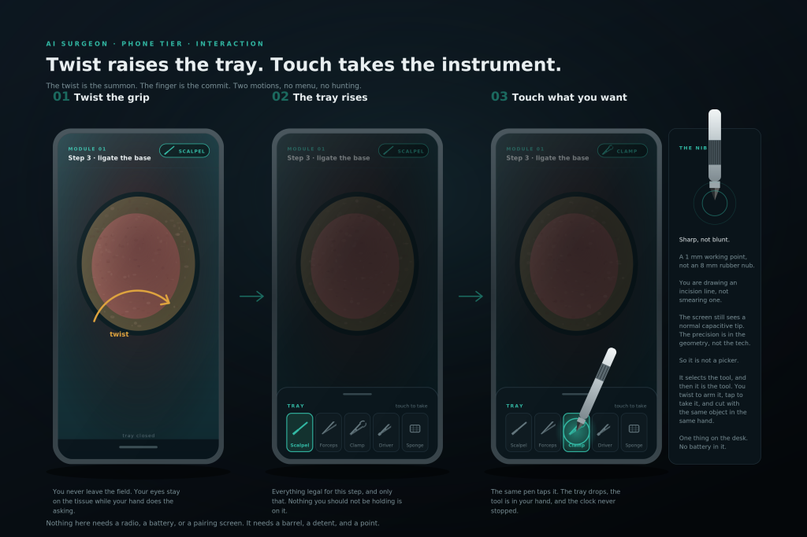
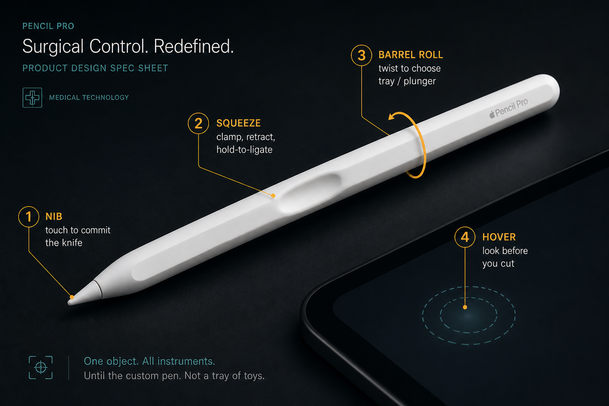
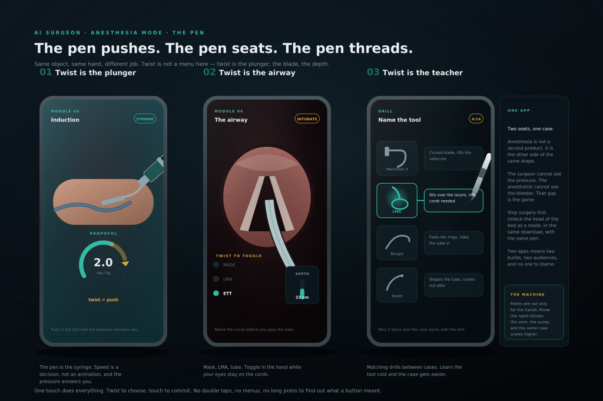

One object in the hand. It is the knife. It is the clamp. It is the
retractor. Twist to choose. Click the top to fire. Squeeze to clamp, retract, or
hold-to-ligate. See one first. Then do one. Study your anatomy.
Honest. Software cannot make a stylus feel like a
Kelly clamp. The Pen is the language. Until yours is down, Apple Pencil Pro
is every instrument — one object, not a tray of toys. iPhone does not take a Pencil;
phone v1 stays finger on glass. iPad is the desk. Not a medical device. Not cleared tracking.

Min-movement stylus
A pen already feels natural. Tiny fake instruments would not. Phone first.
Exploration or curriculum
Always fun. Coherence and movement stay on in both modes. Curriculum is
what counts — Lab, then See One, then Do One. High stakes. Everyone is trying to win.
Scores high enough can read as medical education. The product is still completely benign:
you program it any way you want.
Coherence
50
Twist · click · squeeze. Q / E twist. Space click. F squeeze. Apple Pencil on this pad: nib tap = click, tilt = twist, pressure = squeeze.
Apple Pencil Pro · until yours is down

One object. All instruments.
Barrel roll = twist. Squeeze = clamp / ligate. Nib tap = click (Apple has no clicker cap).
Hover = look before you cut. Same three events as the Chronogate pen.
Use Apple’s hardware until the custom click-cap / knurl / squeeze barrel exists.
Do not buy miniature Kellys. Pencil Pro is the desk. Phone still ships first without Apple.
Pointer field · pointerType pen
Put an Apple Pencil (or any stylus the browser reports as pen) on this pad.
Finger still uses the three buttons. Native Pencil Pro squeeze and barrel roll are iPadOS;
Safari gets pressure, tilt, and nib tap. We do not invent a Web squeeze API.
Nib here · iPad + Pencil
Anatomy of the Pen
Nib
Where it points
The field index. Vision looks here first. On glass, the reticle stands in.
Twist grip
Choose · plunger · tray
Roll the detent. Eyes stay on the field. Summons the tray. No menu.

Top click · squeeze zone
Fire · clamp · ligate
Click commits, incises, goes next. Squeeze is clamp and retractor.
Hold the squeeze to ligate. Same object at the head of the bed: twist is the plunger.
Vision commands
Phone camera · not a cleared tracker
The camera sees the pen and the hand. Mechanical twist / click / squeeze
still work if you deny the camera. This stub does not claim millimetre pose or tool ID.